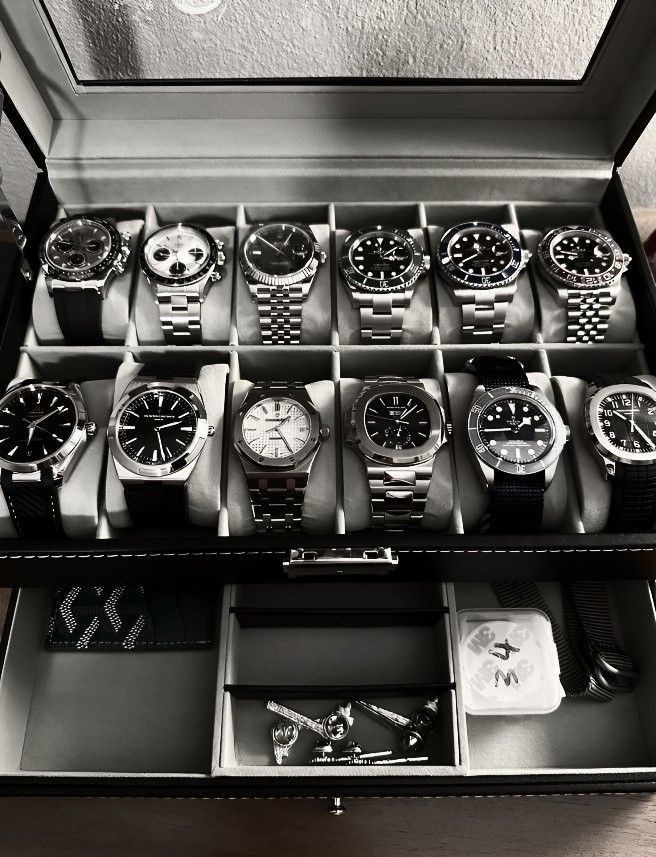

Hiking Watch
hiking watch is a durable, outdoor-friendly timepiece designed for hikers. It typically includes features like GPS, altimeter, barometer, compass (often called ABC functions), and weather tracking. Some also offer heart rate monitoring and route navigation.
Luxery Watch

Luxury watches are not just timepieces, but symbols of artistry, craftsmanship, and often, wealth and success.